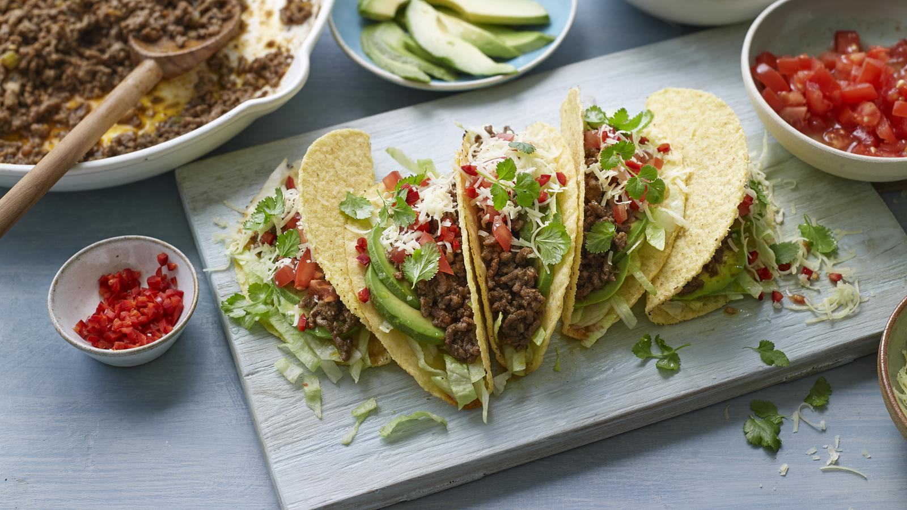

Home
Easy beef tacos

Description
This easy beef taco recipe can be made in bulk. If you want to flex the recipe, batch cook the mince and then use half to make easy tacos and freeze the rest for another dish. It’s also great in burritos, cottage pies and chilli.
Ingredients
For the mince base
- 2 tbsp olive oil
- 1 large onion, finely chopped
- 2 large carrots, finely chopped
- 1 stick celery, finely chopped
- 1 large green pepper, de-seeded and finely chopped
- 4 garlic cloves, finely chopped
- 150g/5½oz mushrooms, finely chopped
- 1.5kg/3lb 5oz beef, pork, lamb, turkey or vegetarian mince
For the tacos
- 1 x 400g/14oz portion of mince base (see above)
- 2 tbsp olive oil
- 1 large garlic clove, finely chopped
- 1½ tbsp ground cumin
- 1½ tbsp smoked paprika
- 1 tbsp dried oregano
- 1 tsp chilli powder
To serve
- 1 packet taco shells or soft taco wraps
- 1 iceberg lettuce, chopped (any lettuce or salad leaves will work)
- 150g/5½oz cheese, grated (use whatever hard cheese you have available)
- 3 tomatoes, roughly chopped
- 1 avocado, peeled, stone removed, flesh smashed
- 1 red chilli, finely chopped
- 1 tbsp freshly chopped coriander (or other soft herbs, such as parsley)
Method
- For the mince base, heat the oil in a large frying pan or sauté pan over a medium heat, then add the onions, carrots, celery and peppers, stirring regularly until softened, this will take about 10 minutes.
- Add the garlic and cook for about 1 minute. Add the mushrooms and stir until softened, then finally add the meat and brown all over (if you don’t have a very large pan you will need to remove the vegetable mixture and fry the mince in batches). Season with salt and pepper.
- The mince base can be frozen at this stage: divide into batches and cool completely before freezing in bags or boxes.
- For the tacos, heat the oil in a large saucepan over a medium heat and add the garlic and spices and cook for about 30 seconds. Add the mince base, along with a splash of water and cook on a low heat.
- If your mince base is frozen, defrost a little at room temperature or in the microwave (it doesn’t need to completely thawed before cooking, just soften enough to break up in the pan). Once defrosted, increase the heat and cook until the mince is piping hot.
- Serve with the taco shells, lettuce, cheese, tomatoes, avocado, chilli and coriander.